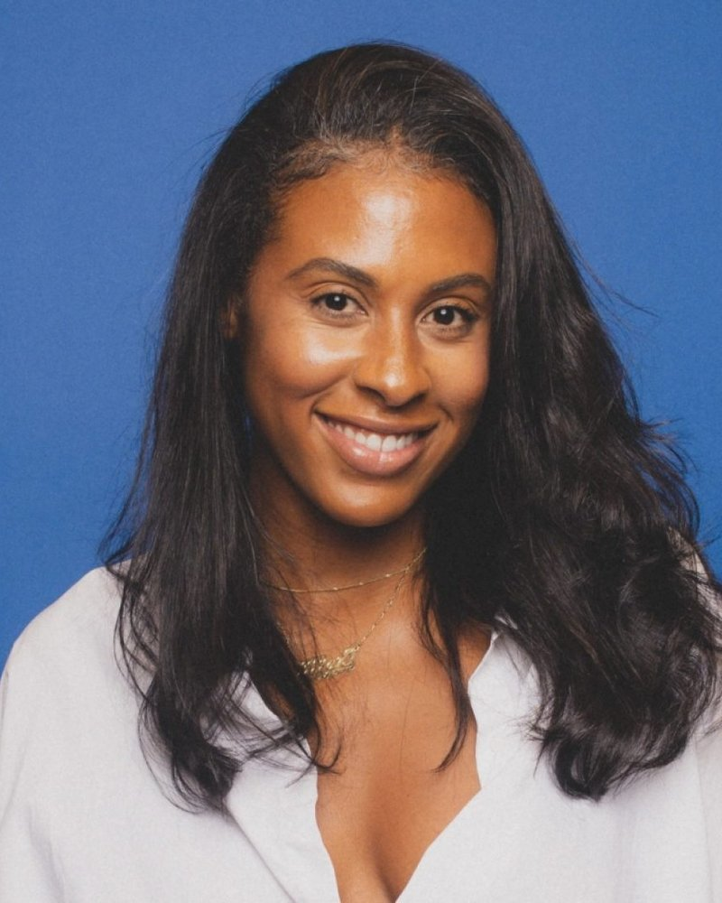
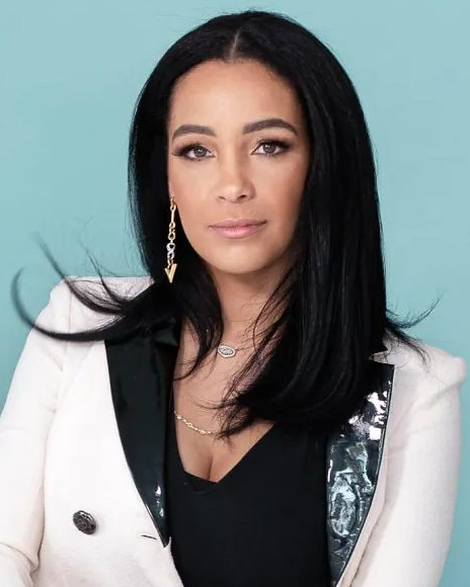
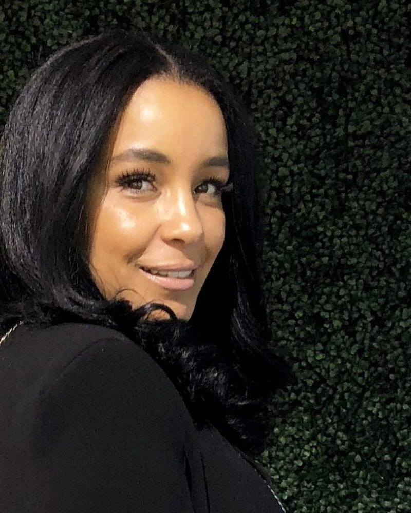

The Wealth Break
Executive Producer. A nationally distributed podcast with iHeartRadio and Essence.Mar 2025 to present · Los Angeles / New York

The work12 episodes
Conversations with founders.
A nationally distributed podcast, made in partnership with iHeartRadio and Essence. I produced and hosted 12 episodes end to end, from cold guest outreach through editing and publishing.
GuestsFeatured



Featured episodesWatch on YouTube
Featured episodes03
- 012Feed What Feeds You: Alex HillFounder of Just Add Hot Sauce
- 011Organic Evolution: Melvin RodriguezCo-founder of Mielle Organics
- 001Demystifying Wealth: Monique IdlettFounder of Reign Ventures